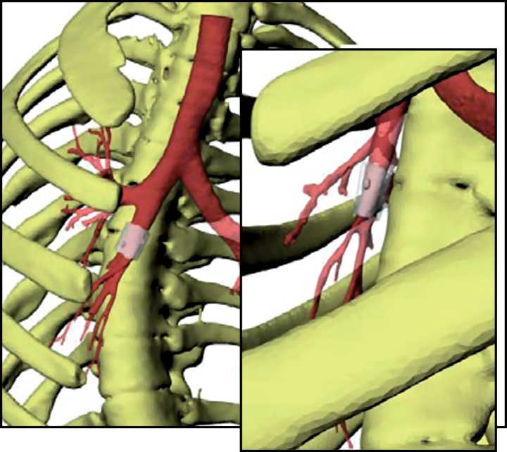
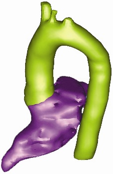
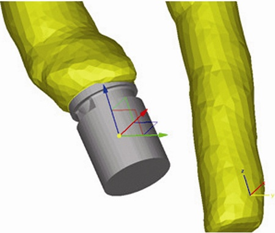
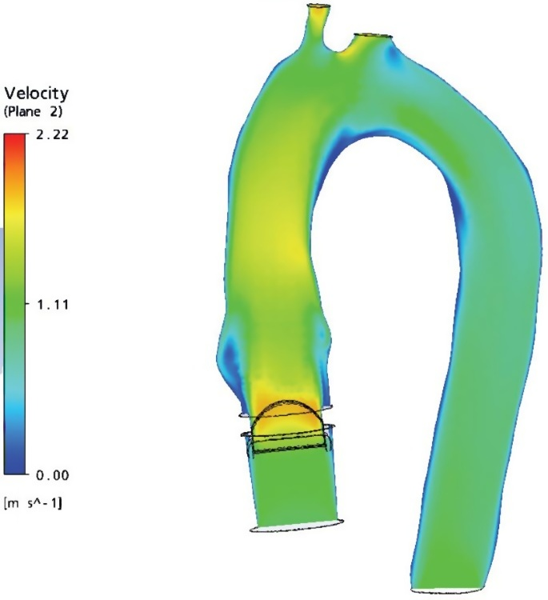
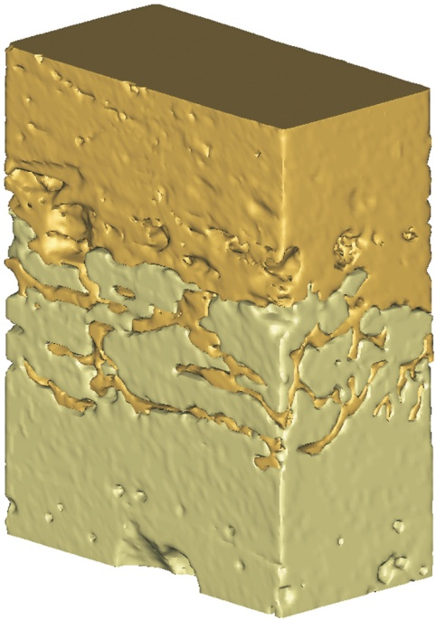
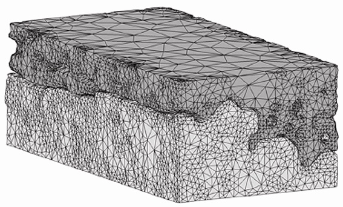
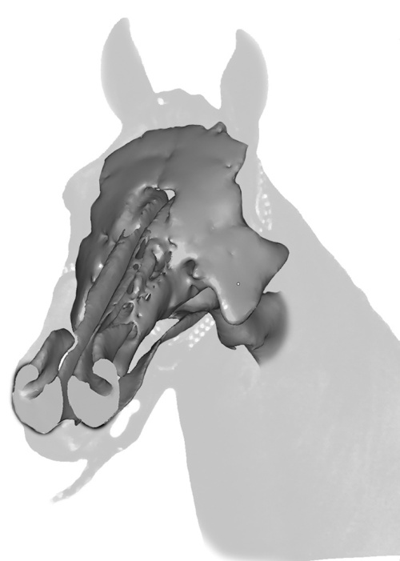
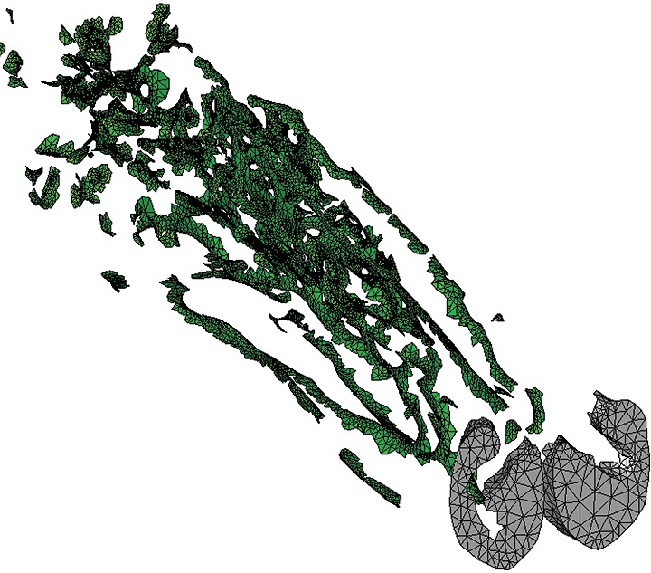
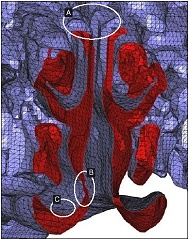
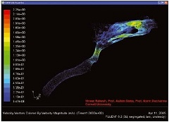

Aort kapak protezinin kan akýþýna etkisinin Mimics ile araþtýrýlmasý:
Kardiovasküler hastalýklardan ölüm oranýn yüksek oluþunun doðurduðu panik, araþtýrmacýlarý aort kapak protezinin kan akýþý üzerindeki etkisini incelemek için, MIMICS ve 3matic ile simülasyon modeli oluþturmaya itti. Kapsamlý bir simülasyon modeli yapýlabilmesi için Aort kapak protezinin modele eklenmesi gerekmekteydi. Bu nedenle araþtýrmacýlar böyle bir çalýþma için MIMICS ve MIMICS'in üreticisi Materialise firmasýnýn, ileri mühendislik yazýlýmý olan 3matic kullanmayý tercih ettiler. Hastanýn MRI görüntülerinden elde ettikleri veriler ile MIMICS'te 3 boyutlu model oluþturuldu. Ardýndan St. Jude Medical © marka Bileaflet kapak tasarýmý için IGES dosyasý oluþturuldu.

 |
 |
Mimics'de Sol Karýncýk segmentasyonu
ve Torasik Aort |
3matic'de kapakçýk pozisyonu |
Aortun STL formatýnýn kapakçýðýn IGES frormatý ile kombine edilmesi için 3matic kullanýldý. 3matic ile araþtýrmacýlar, kapakçýðýn dairesel çýkýþý ile aortun dairesel giriþini hassas bir þekilde konumlayarak, iki modeli birleþtirip kapalý tek bir model oluþturarak, herhangi bir CFD paket programýna aktarmaya hazýr hale getirdiler.

CFD Simülasyonu
Mimics ile kemik çimento arayüz mikromekaniði çalýþmalarý:
Bu çalýþma, insan femuru için ortopedik cerrahlar tarafýndan protezleri sabitleme operasyonlarýnda yapýþtýrýcý olarak kullanýlan kemik çimento kaplamasýnýn, mikromekanik davranýþlarýný daha yakýndan gözlemlemek için yapýlmýþtýr. Bu çalýþma ile ayný zamanda, FE analizinde elde edilecek arayüz bilgileri deneysel veriler ile karþýlaþtýrýlmýþtýr. Çimento kemik arayüzü, kemik ve dökme çimentoyu birleþtirmek için Laküner boþluklar içine derinlemesine hücum etmiþ, kompleks bir yapýdýr. Bu arayüz, femurda çimento örtüsünün katýlaþmasýný saðlamaktadýr. Sonuç olarak çimento örtüsünün ve implantýn stabilitesi, kemik çimento ara yüzünün mekanik davranýþýna baðlýdýr.

Mikro BT kemik-çimento arayüz numune parçasý

Kemik-çimento arayüz numunesinin FEA modeli
FEA çalýþmalarýnýn gerçeðe uygunluðu, girdi olarak kullanýlacak deneysel ve klinik verilerin hassasiyetine baðlýdýr. Bu nedenle bu araþtýrmada, kemik çimento arayüzü numunesinin hazýrlanmasý için MIMICS kullanýlmýþtýr. Mikro BT taramasýndan elde edilen veriler, görüntü üzerindeki gri skalaya dayalý olarak, kemik ve çimento olarak, MIMICS' de ayrýþtýrýlýr. MIMICS ile hacim meshleri optimize edildikten sonra, katý FEA modelde kullanýlmak üzere malzeme özellikleri belirlendi.
Cornell Üniversitesinin atlar ile ilgili çalýþmasý:
Cornell Üniversitesi Hayvan Hastanesinde gerçekleþtirilen bir çalýþmada performans atlarýnýn solunum engellerini, hava yolu basýncý hesaplamasý ve hava akýþ ölçümü gibi sonlu eleman analizi araçlarý kullanarak, belirlenmektedir. Atlara ait solunum yolu sistem modellerinin bu tür bir analiz için taramaya hazýrlanmasý haftalarca sürmektedir. Ýnsana veya hayvana has keskin ve ince cidarlý bölgeler üzerinde bu tarz bir çalýþma yapabilmek için, çok düzgün oluþturulmuþ bir yüzey ve bir de hacim aðýna ihtiyaç vardýr. Çünkü iyi oluþturulmamýþ bir hacim aðý ile CFD yazýlýmlarý hatalý ve yanlýþ sonuçlar verecektir. Dolayýsýyla araþtýrma ekibi, en yüksek derecede üçgenlemeye ulaþabilmek için, piyasada mevcut en iyi að yapýsý oluþturabilen yazýlýma ihtiyaç duymaktaydý.
Ekip, önceleri yüzey aðlarýný iyileþtirmek için, kritik bölgelerdeki üçgenlerden hareket ettirme ve yeniden þekillendirme yöntemi kullanmaktaydý. Fakat bu iþlem oldukça fazla zaman almaktaydý. MIMICS' in otomatik remesh optimizasyon teknolojisi kullanýlmaya baþlandýktan sonra, sadece birkaç gün içerisinde, bilgisayarlý tomografiden alýnan görüntülerle oluþturulan yüksek kalitedeki hacim aðlarý herhangi bir CFD programýna aktarýlmaya hazýr hale getirilmektedir.

CFD Analizi için, kalitesiz yüzey aðý nedeniyle uygun olmayan orijinal 3 boyutlu model

CFD Analizi için, MIMICS ile oluþturulmuþ, uygun yüzey aðýna sahip 3 boyutlu model
 |
 |
Hacim aðý üzerinde, geleneksel yöntemlerle çalýþýlmasý oldukça zor bölgeler |
Modelin CFD Analizi |
Vaka çalýþmalarý hakkýnda detaylý bilgi ve referanslar için:
www.materialise.com/materialise/view/en/415159-FEA+and+CFD.html
Ýrtibat:
4C Medikal
Koza Plaza B Blok No:13
Esenler Ýstanbul
Tel: (212) 438 28 02
www.4cmedikal.com.tr
|